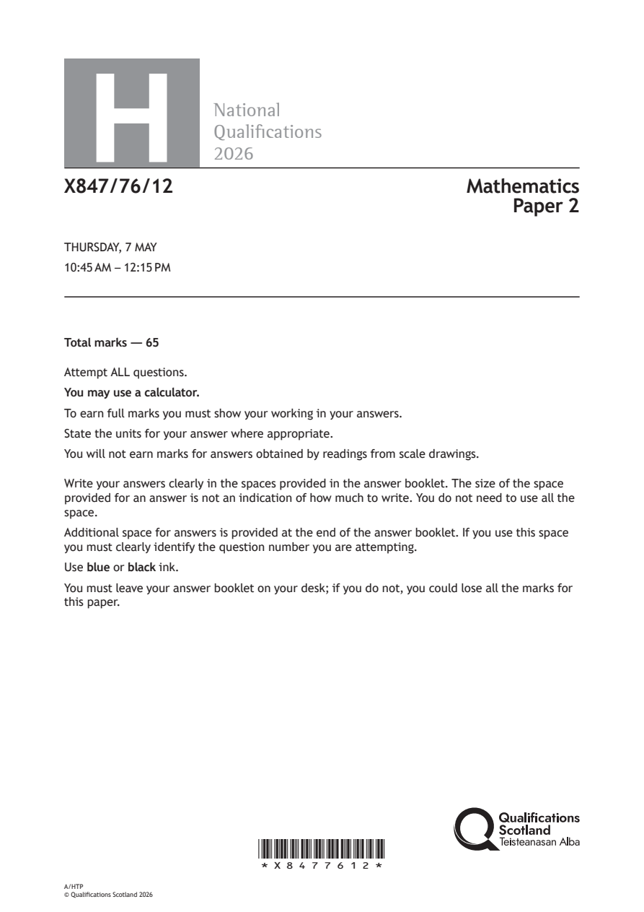
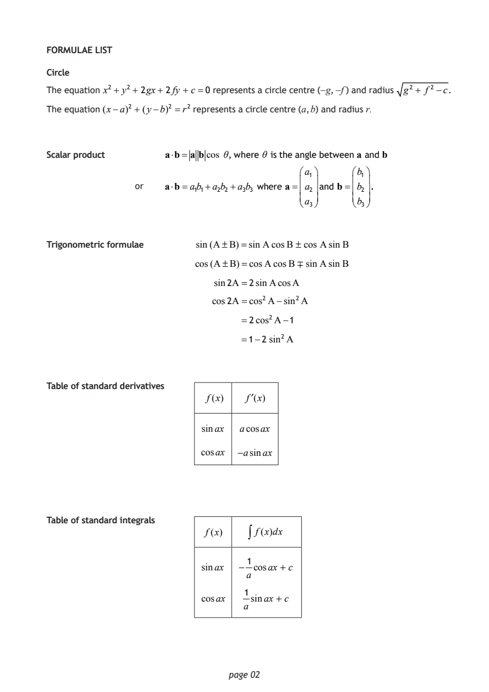
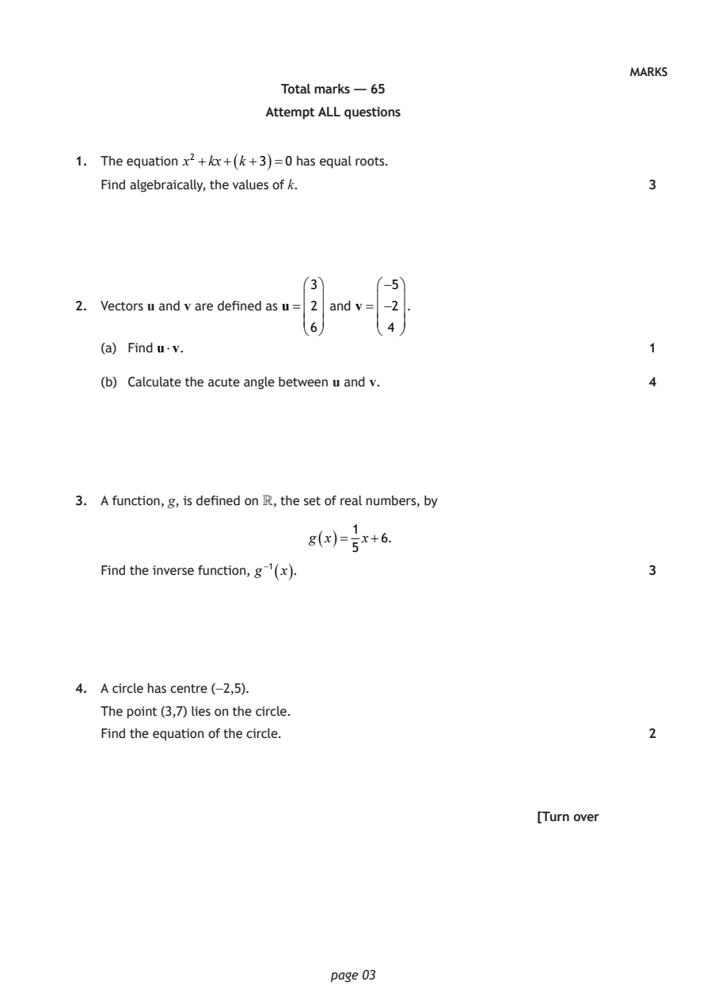
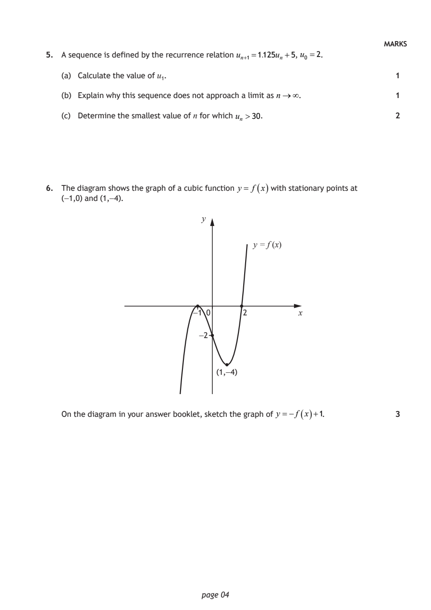
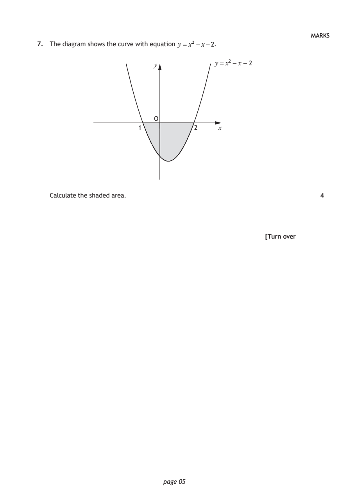
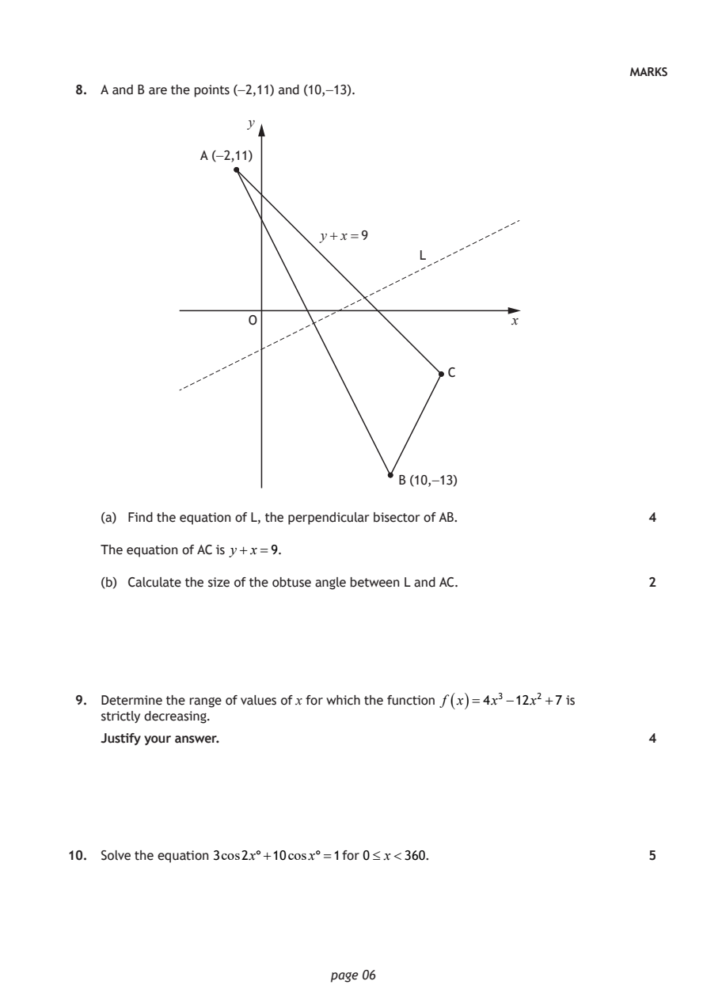
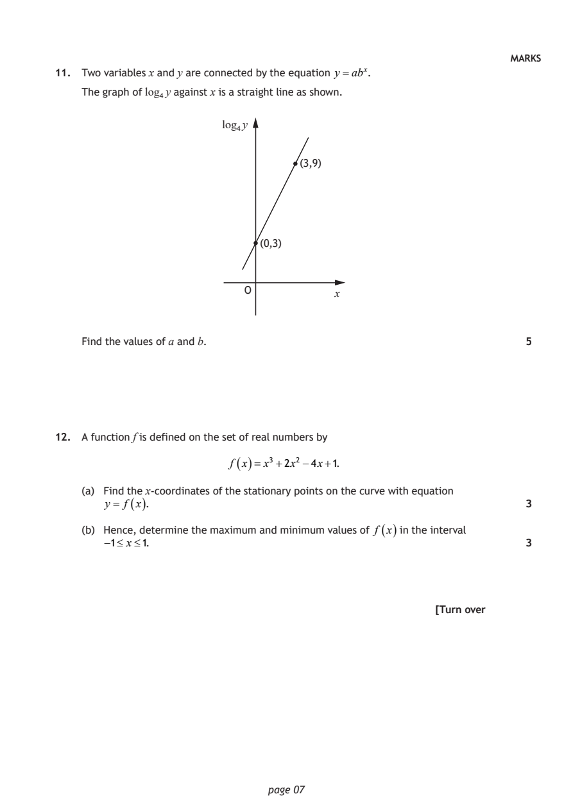
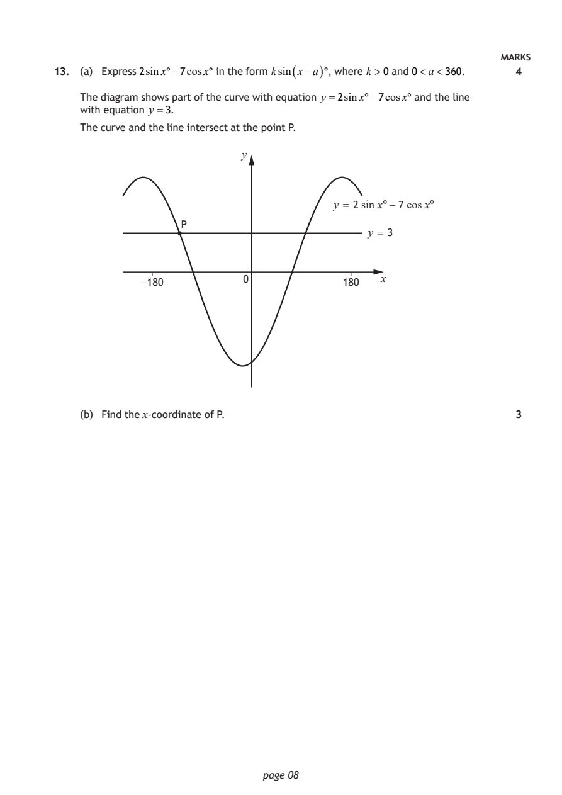
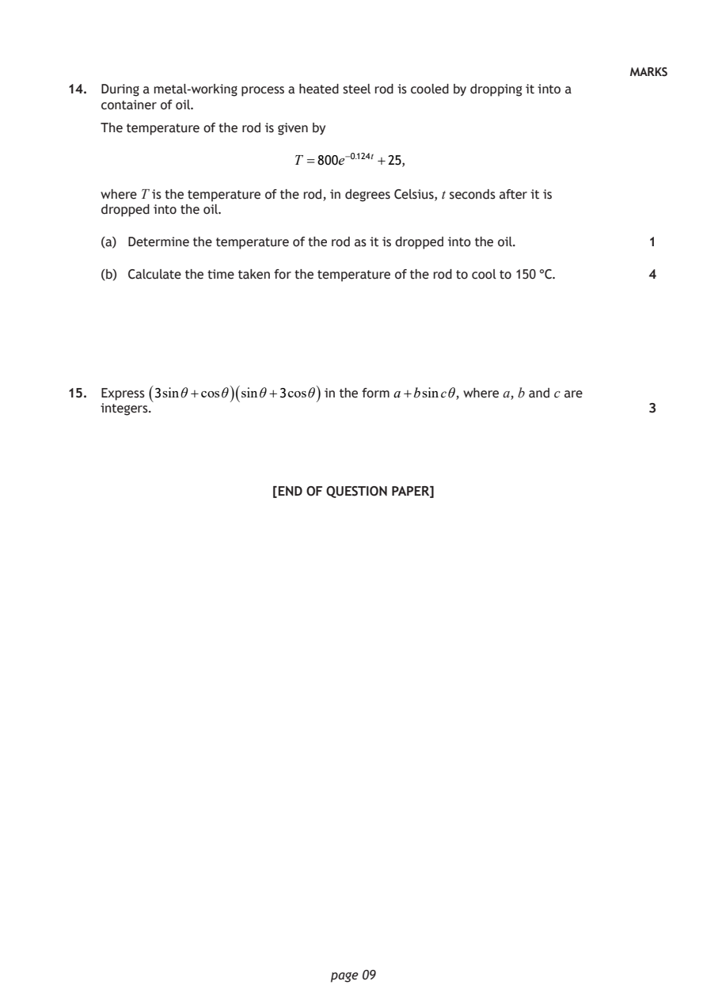

2026 Higher Mathematics - Paper 2 questions
Source: Scottish Qualifications Authority (SQA) / Qualifications Scotland. This is a StemInteract HTML companion, not an official HTML edition. Selectable text is supplied alongside original page images. Use the images or original PDF for equations, powers, fractions, vector notation, tables and diagrams; text extraction cannot fully preserve mathematical layout.
Jump to a question
PDF page 1

Selectable page text
H
National
Qualications
2026
X847/76/12 Mathematics
Paper 2
THURSDAY, 7 MAY
10:45 AM – 12:15 PM
Total marks — 65
Attempt ALL questions.
You may use a calculator.
To earn full marks you must show your working in your answers.
State the units for your answer where appropriate.
You will not earn marks for answers obtained by readings from scale drawings.
Write your answers clearly in the spaces provided in the answer booklet. The size of the space
provided for an answer is not an indication of how much to write. You do not need to use all the
space.
Additional space for answers is provided at the end of the answer booklet. If you use this space
you must clearly identify the question number you are attempting.
Use blue or black ink.
You must leave your answer booklet on your desk; if you do not, you could lose all the marks for
this paper.
*X8477612*
A/HTP
© Qualifications Scotland 2026PDF page 2

Selectable page text
FORMULAE LIST
Circle
The equation x² + y²+ 2gx + 2fy + c=0 represents a circle centre (−g, −f ) and radius g² + f ² −c.
The equation (x−a)² + (y−b)² =r² represents a circle centre (a, b) and radius r.
Scalar product ab= a bcos θ, where θ is the angle between a and b
a₁ b₁
or ab=a₁b₁+a₂b₂ +a₃b₃ where a= a₂ and b= b₂ .
a₃ b₃
Trigonometric formulae sin(A±B)=sinA cosB ± cos AsinB
cos(A±B)=cosAcosB ∓ sinAsinB
sin2A =2sinAcosA
cos2A=cos²A−sin²A
=2cos²A−1
=1−2 sin²A
Table of standard derivatives
f(x) f′(x)
sinax acosax
cosax −asinax
Table of standard integrals
f(x) ∫ f(x)dx
1
sinax − cosax + c
a
1
cosax sinax + c
a
page 02PDF page 3
Paper 2, Question 1Paper 2, Question 2Paper 2, Question 3Paper 2, Question 4
Selectable page text
MARKS
Total marks — 65
Attempt ALL questions
1. The equation x² +kx+( k+3 )=0 has equal roots.
Find algebraically, the values of k. 3
3 −5
2. Vectors u and v are defined as u= 2 and v= −2 .
6 4
(a) Find uv. 1
(b) Calculate the acute angle between u and v. 4
3. A function, g, is defined on , the set of real numbers, by
1
g ( x )= x+6.
5
Find the inverse function, g⁻¹ ( x ). 3
4. A circle has centre (−2,5).
The point (3,7) lies on the circle.
Find the equation of the circle. 2
[Turn over
page 03PDF page 4
Paper 2, Question 5Paper 2, Question 6
Selectable page text
MARKS
5. A sequence is defined by the recurrence relation uₙ₊₁=1.125uₙ +5, u₀ =2.
(a) Calculate the value of u₁. 1
(b) Explain why this sequence does not approach a limit as n∞. 1
(c) Determine the smallest value of n for which uₙ >30. 2
6. The diagram shows the graph of a cubic function y = f ( x ) with stationary points at
(−1,0) and (1,−4).
y
y = f (x)
−1 0 2 x
−2
(1,−4)
On the diagram in your answer booklet, sketch the graph of y =−f ( x )+1. 3
page 04PDF page 5
Paper 2, Question 7
Selectable page text
MARKS
7. The diagram shows the curve with equation y = x² −x−2.
y y = x² − x − 2
O
−1 2 x
Calculate the shaded area. 4
[Turn over
page 05PDF page 6
Paper 2, Question 8Paper 2, Question 9Paper 2, Question 10
Selectable page text
MARKS
8. A and B are the points (−2,11) and (10,−13).
y
A (−2,11)
y+x=9
L
O x
C
B (10,−13)
(a) Find the equation of L, the perpendicular bisector of AB. 4
The equation of AC is y+x=9.
(b) Calculate the size of the obtuse angle between L and AC. 2
9. Determine the range of values of x for which the function f ( x )=4x³−12x² +7 is
strictly decreasing.
Justify your answer. 4
10. Solve the equation 3cos2x°+10cosx°=1 for 0≤ x<360. 5
page 06PDF page 7
Paper 2, Question 11Paper 2, Question 12
Selectable page text
MARKS
11. Two variables x and y are connected by the equation y=ab^{x}.
The graph of log₄y against x is a straight line as shown.
log₄y
(3,9)
(0,3)
O
x
Find the values of a and b. 5
12. A function f is defined on the set of real numbers by
f ( x )= x³ +2x² −4x+1.
(a) Find the x‑coordinates of the stationary points on the curve with equation
y = f ( x ). 3
(b) Hence, determine the maximum and minimum values of f ( x ) in the interval
−1≤ x≤1. 3
[Turn over
page 07PDF page 8
Paper 2, Question 13
Selectable page text
MARKS
13. (a) Express 2sinx°−7cosx° in the form ksin ( x−a ) °, where k >0 and 0<a<360. 4
The diagram shows part of the curve with equation y =2sinx°−7cosx° and the line
with equation y =3.
The curve and the line intersect at the point P.
y
y = 2 sin x° − 7 cos x°
P
y = 3
−180 0 180 x
(b) Find the x‑coordinate of P. 3
page 08PDF page 9
Paper 2, Question 14Paper 2, Question 15
Selectable page text
MARKS
14. During a metal‑working process a heated steel rod is cooled by dropping it into a
container of oil.
The temperature of the rod is given by
T =800e⁻⁰^{.}¹²⁴t +25,
where T is the temperature of the rod, in degrees Celsius, t seconds after it is
dropped into the oil.
(a) Determine the temperature of the rod as it is dropped into the oil. 1
(b) Calculate the time taken for the temperature of the rod to cool to 150 °C. 4
15. Express ( 3sinθ+cosθ )( sinθ+3cosθ ) in the form a+bsincθ, where a, b and c are
integers. 3
[END OF QUESTION PAPER]
page 09PDF page 10

Selectable page text
[BLANK PAGE]
DO NOT WRITE ON THIS PAGE
page 10PDF page 11

Selectable page text
[BLANK PAGE]
DO NOT WRITE ON THIS PAGE
page 11PDF page 12

Selectable page text
[BLANK PAGE]
DO NOT WRITE ON THIS PAGE
page 12